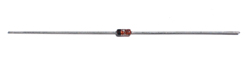
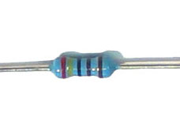
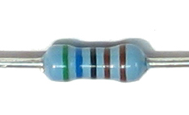
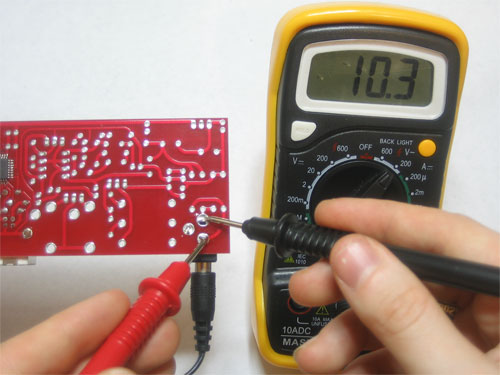
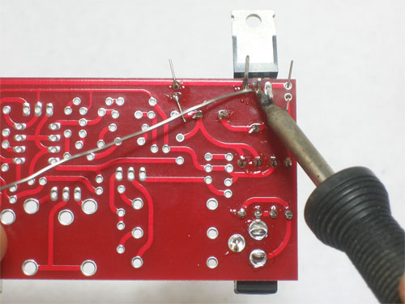

The power supply is the first thing to build. Getting this part right is key! A bad power supply will keep the rest of the synth from working & can damage parts so be sure to test it after its built.
The power supply takes the 9VAC from the power plug and doubles it to 18VAC which then gets regulated down to 12VDC, 5VDC, 6VDC and 5.333VDC.
Read the x0xwiki on the power supply to understand what its doing, before you jump in.
You can always click on the images to zoom in if you need more detail.
| Image | Description | Part number | Notes | |||||||
 |
9VAC transformer wall wart 300-500mA 2.1mm plug |
Make sure this is 9VAC, a common problem is using a 9VDC adaptor. | ||||||||
| Heat sink (TO-220 size) | IC20' | Slips on the 5V regulator to keep it from overheating | ||||||||
| 2.1mm power jack | POWER | Plug the 9VAC adaptor into here | ||||||||
 |
1N4001 (generic) | D40-D43 | These form a full wave rectifier that smooths the AC voltage into DC | |||||||
|  | 1N4148 (generic) | D44-D47 | ||||||||
|
100 ohm 5% resistor (brown black brown gold) |
R1 | ||||||||
|
1K 5% resistor (brown black red gold) |
R2 | ||||||||
|
1.8K 5% resistor (brown grey red gold) | R179 | ||||||||
|
2.2K 5% resistor (red red red gold) | R178 | ||||||||
|
6.8K 5% resistor (blue grey red gold) | R3 | Do not confuse this with the 68K resistor | |||||||
 |
2.4K 1% resistor (red yellow black brown brown) | R5 | Do not confuse this with the 24K resistor | |||||||
 |
5.6K 1% resistor (green blue black brown brown) | R4 | Do not confuse this with a different 1% resistor | |||||||
 |
2K (202) trim potentiometer | TM6 | Be sure it says 202 on the edge, or use the multimeter across the two far points to verify its 2K ohm. | |||||||
 |
.1uF (104) ceramic capacitor | C1, C2, C4, C6 | Small bypass capacitors | |||||||
| 10uF electrolytic capacitor | C60, C61 | Capacitors are directional, and will be destroyed if soldered in backwards. | ||||||||
| 100uF 25V electrolytic capacitor | C7, C8 | Capacitors are directional, and will be destroyed if soldered in backwards. | ||||||||
| 2200uF electolytic capacitor | C3, C5 | Capacitors are directional, and will be destroyed if soldered in backwards. | ||||||||
 |
AN6562 8-DIP dual Op-Amp | IC23 | Do not confuse with the EEPROM chip which may look similar. Look for 6562 on top. | |||||||
| (78x05) 5V voltage regulator, 1.0A | IC20 | This part is directional, make sure to put it in the right way. | ||||||||
| (78L06) 6V voltage regulator, 0.1A | IC21 | Make sure it says 78L06 on it | ||||||||
| (LM336Z-5.0) 5V voltage reference | IC22 | Make sure it says LM336 on it. |

Before you start, do some preparatory work!
Learn how to use a multimeter!
Test the 9VAC adaptor:
Make sure you have a 9V AC transformer adaptor, look for these hints that indicate its AC output. If your kit came with a power supply this isn't necessary
Measure the output, make sure its at least 10V AC. There is a tutorial on how to measure AC voltages here.
Test and measure all resistors:
Use your multimeter to measure all the resistors, this will take 3 minutes now and save you a half an hour later. There is a tutorial on how to measure resistors here.
Also, test the 2K trimpot, make sure you've got the 2Kohm version and not one of the other 3 trimpots.
| Check the kit to verify you have all the parts necessary | |
| Place the PCB in a vise or PCB holder | |
 |
The first step is to place the 2.1mm Power Jack as shown |
| You can solder one pin from above, which will keep the jack in place when you turn the PCB over | |
|
Turn over the PCB, solder the three pins using plenty of solder to fill in the holes as much as possible. |
|  | Insert the 9VAC power plug and use your mulitmeter to measure the voltage across the jack. Make sure its at least 10VAC. All tests on the x0xb0x must be done with the power plugged in (unless otherwise noted) When you are done, remove the power plug. Never solder with the power plug in! |
Turn the PCB over and place the 4 1N4001 diodes D40, D41, D42, and D43 Diodes are directional, make sure the white stripe at the end of each diode matches the stripe in the picture underneath. |
|
|
Solder the diodes in place. |
| Then use the diagonal cutters to clip off the long leads. | |
| Next, place the two 2200uF capacitors C3 and C5. Make sure they are placed correctly, with the negative stripes as shown | |
| Solder in the capacitors | |
| Clip the long leads | |
|
Try measuring AC voltage across C3 and C5, it should be about 26VAC. Sometimes you can't read the AC voltage across the capacitors, in which case you should try to measure the DC voltage across both capacitors, they should be about 15V DC or higher.
|
 |
Place the 7805 5V regulator IC20. Bend it back as shown, this will allow you to put the heatsink on later. Make sure you put the regulator in the right way! Also place C4 and C6 the 0.1uF capacitors. The capacitors are non-directional and can be put it either way. |

|
Solder and clip the regulator and two small capacitors |
| Insert the power plug and measure the DC voltage from the metal back of the 7805 (which is tied to ground) and the left-most pin, as shown. The output voltage should be about 5VDC. If it's less than 4.75VDC or higher than 5.25VDC then check to make sure you have assembled everything correctly. | |
Place the 7806 6V regulator IC21 and the 2 remaining 0.1uF ceramic capacitors C1 and C2 Make sure you put IC21 in the right way, the curve of the package should match the curve in the image below it. The capacitors are non-directional and can be put it either way. |
|
| Solder and clip the parts | |
| Measure the voltage across C1 it should be about 6VDC - between 5.75 and 6.25 is OK. | |
Next up, place the 4 1N4148 diodes D44, D45, D46, and D47 as well as the 2K trimpot TM6, R2 R3, R4, R5, C7 and IC22 Make sure the diode stripes are facing the right way, that the resistors are correct, the trimpot is 2K (202) and that IC22 is placed correctly |
|
| Flip over the PCB and solder in all the parts, then clip the leads | |
| The trimpot is used to adjust the 5.333V reference voltage which is used by the VCO to create notes. Use a thin screwdriver to gently turn the potentiometer. Do not be rough with it, or try to force it past its hard limit. | |
You should be able to adjust the trimpot so that it ranges from about 5.25 to 5.75VDC. What is most important is that it can be set to less than 5.3V and higher than 5.4V. You can measure the voltage at pin #5 of IC23 as shown. You can use the heatsink of the 7805 as ground reference. Do not trim the potentiometer to 5.333V yet, just check to make sure the range is there |
|
Place the remaining parts: IC23 (AN6562 op-amp), R1, C8, C60, C61, R178 and R179 Make sure the opamp is placed properly. The notch in the chip should match the notch in the silkscreened image. If you are nervous about soldering in ICs, you may want to buy sockets for the chips. |
|
| Solder in all of the parts and clip the leads | |
| Now you can tune the 5.333V reference, measuring the voltage on J4 as shown | |
 |
Finally, test the +12V supply as shown using your multimeter. The voltage should be between 11.75V and 12.25V |
| Cut 3 wires, at least 6" long, strip the ends and tin them. The two side colors don't matter but make sure one is black, it will make it easy to remember that the middle pin or J4 is ground. | |
 |
Solder the wires into J4 with the black wire in the middle |


{kind=link}
{kind=link}
{kind=link}
{kind=link}
{kind=link}
{kind=link}
{kind=link}
{kind=link}
{kind=link}
{kind=link}
{kind=link}
{kind=link}
{kind=link}
{kind=link}
{kind=link}
{kind=link}
{kind=link}
{kind=link}
{kind=link}
{kind=link}
{kind=link}
{kind=link}
{kind=link}
{kind=link}
{kind=link}
{kind=link}
{kind=link}
{kind=link}
{kind=link}
{kind=link}
{kind=link}
{kind=link}
{kind=link}
{kind=link}
{kind=link}
{kind=link}
{kind=link}
{kind=link}
Doesn't work? Try out the suggestions before posting on the forum
- Is it plugged in?
Remember, you can't test voltage without power -
Are you using the right kind of adaptor?
x0xb0x needs a 9VAC adaptor, not a 9VDC adaptor. It will not work with a DC adaptor! See the preparatory steps for instructions on how to verify that it is a 9V AC adaptor - Are you measuring the voltages (AC or DC) correctly with the multimeter
Multimeters are all very similar in practice, but have different interfaces. Make sure you are measuring voltage correctly. Unless otherwise mentioned, the voltages are taken with respect to ground (the middle pin of J4, or the heatsink of the 7805 for example) Here is a tutorial on how to use a multimeter - Are the electrolytic (blue cylindrical) capacitors in backward?
Check that they look like the images above, putting them in backwards will create a short. - Are the resistors the correct values?
Check them again, and in good light. If you want to measure the resistance with a multimeter they cannot be in the circuit: you will not get the correct reading while they are soldered it. - Go through all of the tests starting from the beginning.
Always go back and verify your previous readings: test the jack voltage, then the voltage across C3 and C5, etc.